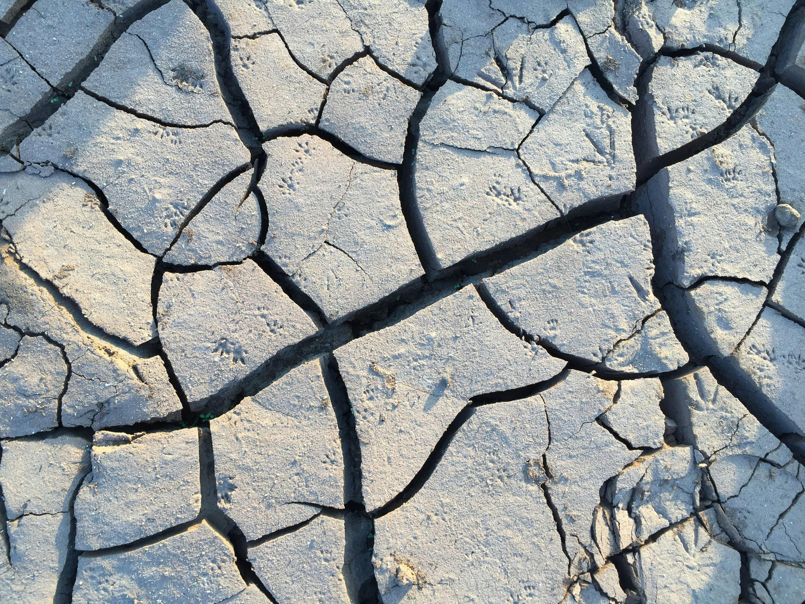
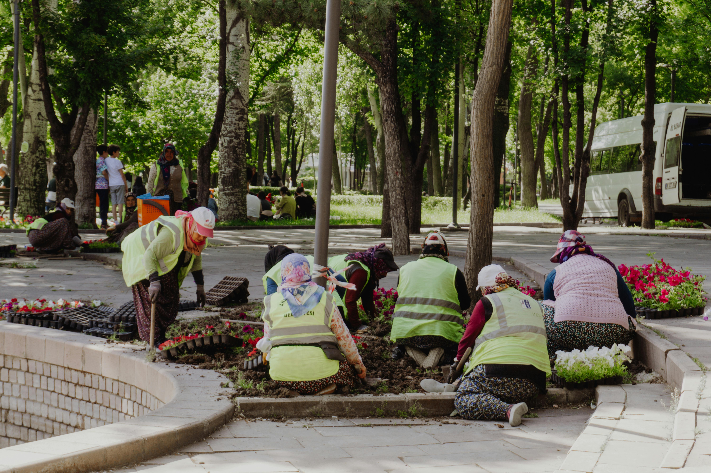
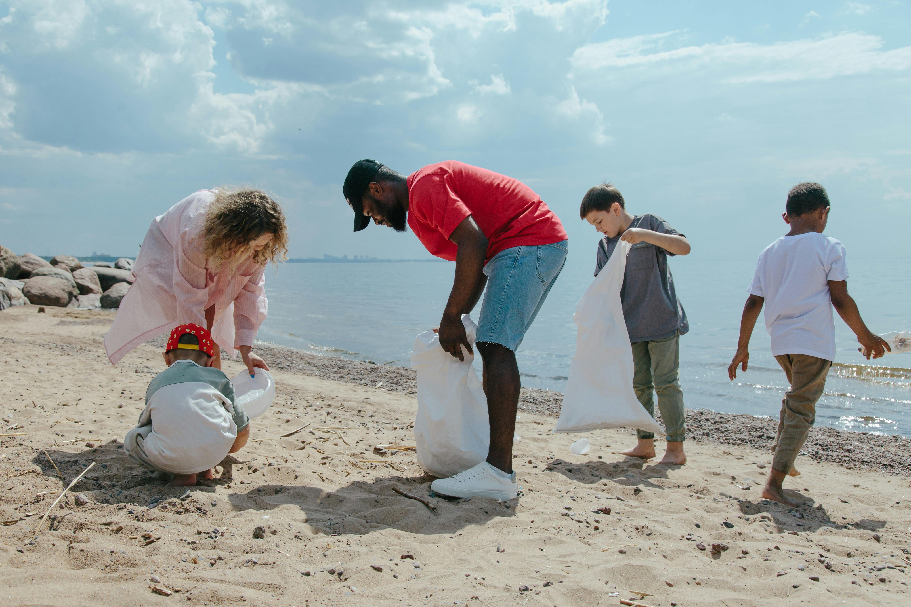

التغير المناخي
تغير المناخ: تحدي عصرنا الأكبر
تغير المناخ ليس مجرد قضية بيئية، بل هو تهديد عالمي يمس كل جانب من جوانب حياتنا. اكتشف كيف يمكننا جميعًا التعاون لحماية كوكبنا للأجيال القادمة

تعريف تغير المناخ
يشير تغير المناخ إلى التغيرات المستمرة في أنماط الطقس ودرجات الحرارة التي تحدث على مدى فترات طويلة. هذه التغيرات ناتجة عن عوامل طبيعية مثل الانفجارات البركانية، ولكن الأنشطة البشرية هي السبب الرئيسي للتغيرات السريعة التي نشهدها حاليًا. من بين أبرز الآثار: ارتفاع درجات الحرارة، ذوبان الجليد، وزيادة الظواهر الجوية الحادة كالعواصف والجفاف
حقائق سريعة:
شهد العقد الماضي أعلى درجات حرارة مسجلة في التاريخ.
ارتفعت مستويات البحر بمعدل 20 سم خلال القرن الماضي.

الأسباب الرئيسية
الأسباب البشرية التي تساهم في تغير المناخ تشمل:
حرق الوقود الأحفوري:
مثل الفحم والنفط والغاز لإنتاج الطاقة، ما يؤدي إلى انبعاث كميات كبيرة من ثاني أكسيد الكربون.
إزالة الغابات:
تقليل قدرة الأرض على امتصاص الكربون
الأنشطة الزراعية:
إنتاج الميثان من تربية الماشية واستخدام الأسمدة الكيميائية.
هل تعلم؟
النقل والمواصلات مسؤولة عن 14% من الانبعاثات العالمية

الآثار المترتبة
تغير المناخ يؤثر على الكوكب والإنسان بطرق عديدة:
النظم البيئية:
انقراض العديد من الأنواع نتيجة لتغير موائلها الطبيعية
الأمن الغذائي:
تقليل إنتاج المحاصيل الأساسية كالأرز والقمح بسبب الظروف المناخية غير المتوقعة.
المدن الساحلية:
ارتفاع مستوى البحر يزيد من خطر الفيضانات ويهدد المجتمعات السكانية
الصحة العامة:
انتشار الأمراض المرتبطة بالمناخ مثل الملاريا وحمى الضنك.
قصص حقيقية:
مدن مثل ميامي وجاكرتا تواجه خطر الغرق خلال العقود القادمة

الحلول
مواجهة تغير المناخ تتطلب إجراءات جريئة ومبتكرة:
الطاقة المتجددة:
الاستثمار في الطاقة الشمسية والرياح بدلاً من الوقود الأحفوري
التشجير وإعادة الغابات:
زراعة الأشجار لتخفيف تركيز ثاني أكسيد الكربون
التقنيات الحديثة:
استخدام تقنيات تقلل من الانبعاثات في الصناعات
التعليم والتوعية:
نشر الوعي بأهمية الاستدامة وأثر الأفراد في التغيير
مبادرة عالمية:
حملة "مليار شجرة" التي تهدف إلى زراعة مليار شجرة بحلول 2030

دورك في مكافحة تغير المناخ
كل شخص يمكنه أن يسهم في الحد من تأثير تغير المناخ:
في المنزل:
تقليل استخدام الكهرباء من خلال الأجهزة الموفرة للطاقة
في التنقل:
استخدام وسائل النقل العام أو السيارات الكهربائية
في الاستهلاك:
اختيار المنتجات الصديقة للبيئة
في المجتمع:
الانضمام إلى المبادرات البيئية المحلية
فكرة:
جرب تحدي "يوم بلا كربون" لتقليل بصمتك الكربونية لمدة 24 ساعة

قسم التفاعل
"تعرف على بصمتك الكربونية"
كم تُنتج من انبعاثات الكربون يوميًا؟ استخدم أداتنا التفاعلية لحساب بصمتك الكربونية واحصل على نصائح مخصصة لتقليلها. بالإضافة إلى ذلك، اكتشف كيف يمكنك المساهمة في مبادرات إعادة التشجير أو دعم الطاقة النظيفة.
نصيحة:
شارك نتيجتك مع الأصدقاء لتشجيعهم على الانضمام للتغيير